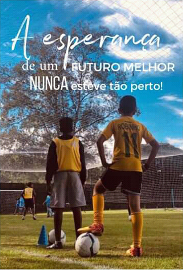

Sobre o Instituto Trilho Certo
Somos uma Organização do Terceiro Setor sem fins lucrativos, séria e comprometida em mudar a realidade social de muitas crianças, adolescentes e suas famílias em situação de vulnerabilidade social, expostas a um contexto de tráfico de drogas, violência doméstica, defasagem escolar, dentre outras violações de direitos.
Atendemos famílias moradoras da região norte de Campinas, divisa com Hortolândia, aproximadamente a 1 km do complexo penitenciário, local de muitas ocupações, pobreza, exclusão e risco social.
Desenvolvemos programas e atividades esportivas, culturais e de lazer que visem a garantia de direitos e a potencialização pessoal, bem como o acompanhamento das famílias através do Serviço Social.
Local do Instituto Trilho Certo
Nosso Instituto se encontra na cidade de Campinas-SP, na Rua Estrada Velha - Campinas Monte Mor, nº 700, Bairro Chácara Nova Boa Vista.
Apadrinhe uma Criança
É possível apadrinhar uma de nossas crianças, doando um valor fixo mensal de R$32,00 que será destinado para contribuir com o crescimento, alimentação e itens essenciais para a criança
Também realizamos outras atividades em nosso instituto, como:
- Torneio de Futebol
- Espaço com Piscina e Brinquedos
- Oficinas de Aprendizagem
- Doação de Hortifruti
- Almoço Beneficente
- Bazar Beneficente
- Entre outros